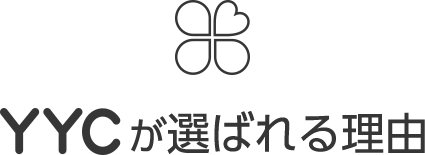

YYCなら、あなたにも合う
“新しい出会い”がきっと見つかる
- 飲み友・カフェ友を
作りたい - 素敵な恋人が
欲しい - 趣味の合う仲間と
話したい - 誰かに話を
聞いて欲しい

ユーザーが多く理想の相手が見つかる
YYCには毎日4000人が新たに登録しており、累計ユーザーは1000万人以上！いろんな条件で絞り込めば多くの人の中から理想のお相手を見つけることができます。
無料コンテンツで気軽に交流できる
YYCなら今あなたが何してるかを投稿する「つぶやき」や、同じ趣味の人と集まって話せる「コミュニティ」など、無料で交流できるコンテンツが充実！
お金をかけずに出会うこともできる
YYCでは無料でもらえるポイントで全ての機能が使えるので、メールを送るために月額料金がかかる心配はありません。 ※女性はもちろん基本無料
YYCはアプリでも
“新しい出会い”を応援します。